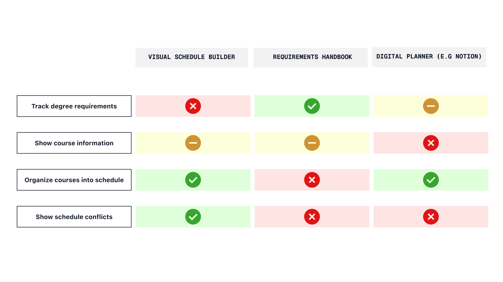

DESNbook
Concept for an all-in-one dashboard that allows design students to plan their degrees.
Project Type:
Personal Project
Timeline:
9 weeks (April-June 2025)
Tools & Skills:
Figma
Jitter
User Research
User Testing
Overview
Planning out courses for the DESN program is a hassle.
As a design student in the DESN program, one area I dreaded was planning my courses - especially in my first year.
Problem
Inconsistent, divided platforms
Currently, there is no unified site to plan out the degree. Students must navigate multiple platforms to meet requirements, often leading to miscommunication and a disjointed user experience.
Solution
One dashboard for all your course planning needs
A live digital planner that tracks DESN requirements, allowing students to manage course planning, view potential schedules, and address any issues in one place.
Initial Research
To understand the pain points design students face, I surveyed 15 current DESN students.
This helped me understand their experiences when planning their degrees. I asked a mix of qualitative and quantitative questions to pinpoint what made course planning difficult.
Based on these interviews, here are the major pain points identified:
- Confusion over course requirements
- Planning your degree is tedious
The current design handbook lacks support for showing how courses affect degree progress. 53% of students had trouble keeping track of course requirements, and 46% wished they had a real-time degree requirement checker.
The current process requires students to use three separate systems, creating a fragmented workflow prone to errors. Over 25% of students rely on third-party tools (Notion, Excel, etc.) to ensure accuracy.
Competitor Analysis
I analyzed the three most common tools design students use to plan their degrees, focusing on their strengths and weaknesses. While each app had one or two strong core features, none supported the full journey needed. This reinforced survey feedback about the frustration of switching between multiple platforms.
Ideation Process
Re-evaluating the User Journey
Based on the pain points identified, I mapped the current user flow to understand where frustrations originated. I then revised it to create a more seamless experience.


User Feedback
Mid-Fidelity to Hi-Fidelity
Based on my research, I developed a mid-fidelity prototype that addressed the revised user journey, consolidating all major flows into a single dashboard.

To test the prototype, I asked three design students who hadn't used the app to:
- Add a course to their first-year schedule.
- Check which credits they still needed.
- Create a timetable for one year.
Since these three flows were most important to students, my goal was to make them as simple and intuitive as possible.
Here are the insights gained from this testing:
Course Card Design
User testing showed that course cards lacked clarity and essential details, such as when a course was offered. Based on feedback, I redesigned the cards with clearer organization and added labels to show which requirements each course fulfills.
Suggestion Sidebar
Users wanted the sidebar to be more functional. Early versions displayed only credit totals without actionable suggestions. The improved version includes recommendations and quick fixes students can apply with one click.

Final Product
Easily view course descriptions and add prerequisites directly.
Filter and visualize all possible course schedules.
Resolve course issues instantly with one click.
Next Steps
Connection to Existing Platforms
Since users wouldn't transition to a new platform immediately, a sync function with existing systems would improve productivity. Making DESNbook the central hub for planning would speed up workflows and reduce human error when cross-referencing resources.
Takeaways
Don't Reinvent the Wheel
My early designs focused on aesthetics rather than usability. By prioritizing user journeys and incorporating feedback from real students, the final product delivers an experience tailored to those who will actually use it.